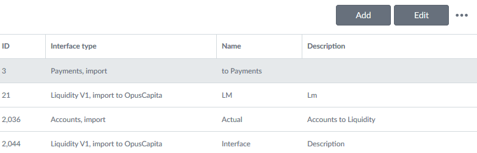

Grid
Description
Data grids show structured data and their purpose is to make that data readable, scannable and easily comparable.
Loading data
Data grid content shows the waiting indicator when loading of the data is ongoing (data grid column headers are visible). If there is no data available there should be a guidance text “There are no items to show in this grid.” This must be added to each grid so that all needed localizations are taken into account.
Features
The size of the grid is adjusted automatically by the container it is in. If the grid does not fit, then a scrollbar appears so that the header row remains visible. Here are the main features of the grid:
- The content of cells can be defined based on the needs.
- Cells can include e.g. icons with or without actions.
- Actions for mouse events must be added case by case.
- Data grid rows are not automatically resized based on the content, and text is not wrapped i.e. there is always one row of data in one row. If the text is longer that fits it is cut and this is indicated with ellipsis (…).
- User can select and reorder shown columns.
- User can resize the columns by dragging.
- The width of every column must be set.
- The row height can be adjusted if needed.
- The keyboard navigation is not supported by default.
- Sorting direction is indicated in a column header with an arrow. Default sorting can be defined.
- Filtering is by default off. If it is set on the grid includes a row with action bar. Text filtering is case insensitive with contains operation.
- The width of every column must be setThe data grid has optional features e.g. row selection (focus), context menu, filtering and multi selection (with or without checkboxes), and inline editing.
Action bar
Grid’s action bar is shown if filtering or/and inline editing is on or there is custom actions defined for the grid. User can open Grid’s action menu with ellipsis (…) from the action bar. Available actions are (if they are turned on): Show filtering row/Hide filtering row, Delete row and Select and reorder columns. Also custom actions can be added to this menu. Action bar enables custom header text or other components like buttons. The custom area is divided into right and left areas.
Column alignment
- Columns that contain ONLY numerical data are always aligned to the right e.g. money amounts which are by default shown with two decimals.
- Columns that contain dates are aligned to the right.
- Columns that contain other types of data: text, numbers+text (including IBAN, BBAN) are aligned to the left.